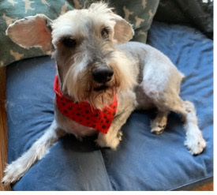

My little family

Our 1st dog, Dexter
Our 2nd dog, Dahlia
Our 3rd dog, Coco Puff
Hola bienvenidos, I am Laura, and I am on a journey to feed my mind, body and soul! My mission is to feed my mind with new educational information, take better care of my body by doing morning yoga and for my soul I am getting back in touch with my roots.
I was born and raised in Las Vegas, Nevada. I am a mother to a little boy and 3 dog. Being from Las Vegas of course I am a foodie, who wouldn't be?! There are so many different places and ethnic foods to try here. I love nature, so of course on family days you’ll find me hiking the trails of Mt. Charleston in the hot summer months or Red Rock Canyon in the cold winter months, with my son and partner by my side. When I finally do get some time alone, I’ll be catching up on my favorite tv series “What We Do In The Shadows” or listening to one of my many favorite true crime podcasts.
I work at Amazon as a warehouse associate in the inbound dock department. I have a certificate in medical assistant and I am currently attending Correlation One to get my certification in software development. My goal is to hopefully get back into the medical field but this time as a software developer.
My journey so far to becoming a web developer has been jam packed with a little bit of uncertainty, realizing, patients for myself and finally amazing after everything makes sense and fits perfectly like a puzzle. I have learned so much and I am excited to learn so much more! I have learned how to use HTML, links, favicon, images, image mapping. tables, list, audio, and video. My favorite thing I’ve learned for far has to be images, video and audio. I like these because it brings me back to my Myspace days where my interest in this field first started.
My little family
Our 1st dog, Dexter
Our 2nd dog, Dahlia
Our 3rd dog, Coco Puff